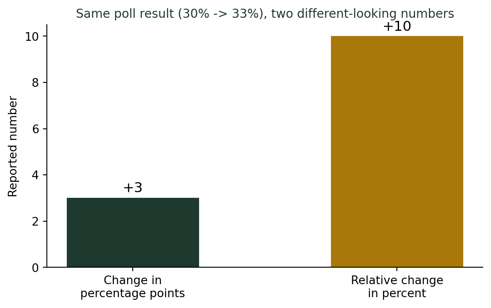
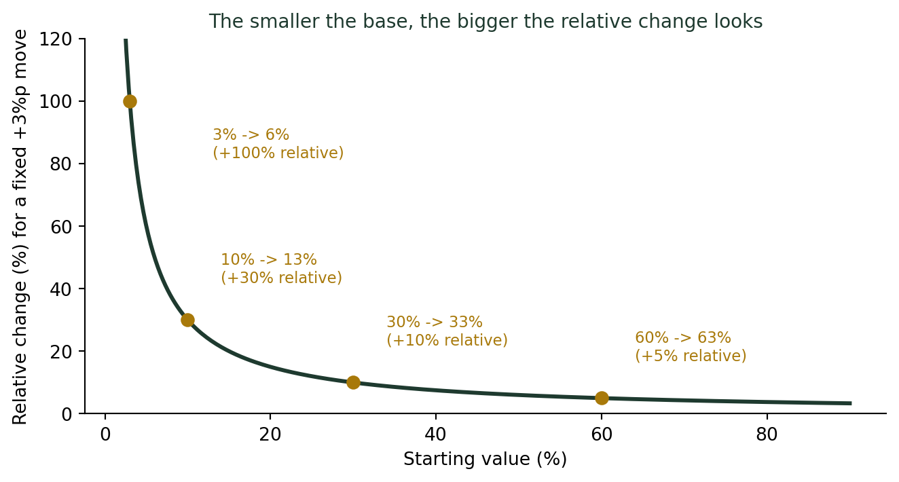

(비율과 백분율의 함정) 지지율 3% 상승인가, 3%포인트 상승인가?
통계기초
기술통계
여론조사 지지율이 30%에서 33%로 바뀌었다. 이건 3% 오른 걸까, 3%포인트 오른 걸까? 두 표현이 얼마나 다른 인상을 주는지 살펴봅니다.
“지지율 3% 상승”이라는 헤드라인
선거철 강의를 할 때마다 나는 신문 헤드라인을 몇 개 오려서 보여준다. 같은 여론조사 결과를 두고 신문마다 표현이 미묘하게 다르기 때문이다. 지난달 지지율 30%, 이번 달 33%라고 해보자. 어느 신문은 “지지율 3% 상승”이라 쓰고, 다른 신문은 “지지율 3%포인트 상승”이라 쓴다. 같은 조사 결과를 두고 왜 표현이 다를까? 그리고 둘 다 맞는 말일까?
%와 %p는 전혀 다른 숫자다
퍼센트(%) vs 퍼센트포인트(%p)
- %포인트(%p): 두 퍼센트 값의 단순 차이. \(33\% - 30\% = 3\%p\)
- %(상대변화율): 원래 값 대비 얼마나 늘었는지의 비율. \(\dfrac{33-30}{30} \times 100 = 10\%\)
지지율이 30%에서 33%가 된 것은 3%포인트 상승이 정확한 표현이다. 반면 “3% 상승”이라고 하면, 원래 지지율(30%)이 3%만큼 늘어난 것, 즉 30.9% 정도가 되어야 맞는 말이 된다. 실제로는 33%가 됐으니 “3% 상승”이 아니라 “10% 상승”이라고 해야 정확하다.
같은 변화를 놓고 “3%포인트 상승”과 “10% 상승”이라는, 숫자부터 다른 두 표현이 동시에 성립한다. 무엇을 강조하느냐에 따라 완전히 다른 인상을 줄 수 있다.
기준값이 작을수록 두 숫자의 격차는 더 벌어진다
이 격차는 원래 값(기준값)이 작을수록 훨씬 심해진다. 똑같이 “3%포인트 상승”이어도, 지지율이 40%에서 43%가 된 경우와 3%에서 6%가 된 경우는 상대변화율이 완전히 다르다.

지지율이 60%에서 63%가 되면 상대적으로는 겨우 5% 상승이지만, 3%에서 6%가 되면 상대적으로는 무려 100% 상승, 즉 지지율이 “두 배”가 된 셈이다. 똑같은 +3%포인트인데, 어디서 출발했느냐에 따라 “상대적으로” 얼마나 커 보이는지는 완전히 달라진다.
뉴스 헤드라인에서 자주 벌어지는 일
같은 변화, 다른 헤드라인
| 실제 변화 | %p로 쓰면 | %(상대변화율)로 쓰면 |
|---|---|---|
| 실업률 4% → 5% | “실업률 1%p 상승” | “실업률 25% 급증” |
| 기준금리 2% → 3% | “금리 1%p 인상” | “금리 50% 인상” |
| 신용카드 연체율 1% → 1.5% | “연체율 0.5%p 상승” | “연체율 50% 급증” |
셋 다 “틀린 계산”은 아니다. 다만 자극적인 헤드라인을 원한다면 상대변화율(%) 쪽을, 차분한 인상을 원한다면 %p 쪽을 고르는 경향이 있다. 숫자가 작은 지표(실업률, 연체율처럼 한 자릿수 %)일수록 상대변화율은 쉽게 부풀려진다.
더 깊이: 이 3%포인트, 통계적으로 진짜 차이일까?
여기까지는 “3%포인트”와 “10%”라는 표현의 차이였다. 그런데 한 가지 질문이 남는다. 지지율이 30%에서 33%로 바뀐 것이, 실제로 여론이 움직인 걸까, 아니면 여론조사 특유의 표본 오차 안에서 우연히 흔들린 걸까?
이걸 판단하려면 단순한 뺄셈(%p)을 넘어, 두 표본비율의 차이가 통계적으로 유의미한지를 검정해야 한다. 표본크기가 작으면 3%포인트 정도는 오차범위 안에서 얼마든지 발생할 수 있다.
이 검정 방법은 강의노트 〈기초통계 3. 일변량분석 — 독립인 두 모집단 비율 차이〉에서 다룬다. 두 표본비율 \(\hat p_1, \hat p_2\)의 차이에 대한 검정통계량과 신뢰구간을 구하는 절차인데, “3%포인트 상승”이 우연인지 실제 변화인지를 가려낼 때 정확히 같은 논리가 쓰인다.
결론: 어느 쪽인지 항상 확인하자
%와 %p를 구분해서 읽는 법
- 뉴스에 “%”라는 표현이 나오면 그것이 %p(차이)인지, 상대변화율(%)인지부터 확인한다.
- 원래 값이 작은 지표일수록, 상대변화율(%)은 실제 변화보다 훨씬 커 보인다.
- 여론조사·금리·실업률처럼 오해가 잦은 지표는 특히 %p로 먼저 확인하는 습관을 들인다.
- 직접 계산할 때는 “차이”인지 “비율”인지 스스로도 명확히 구분해서 쓴다. 두 개념을 섞어 쓰면 나부터도 숫자에 속게 된다.
“3% 올랐다”는 말과 “3%포인트 올랐다”는 말은, 알파벳 한 글자(p) 차이지만 뜻하는 바는 전혀 다르다. 숫자를 정확히 읽으려면, 그 뒤에 숨은 작은 글자 하나까지 놓치지 말아야 한다.
선거 개표 방송을 보다가도 나는 자꾸 이 글자를 확인하는 버릇이 생겼다. “지지율 5%p 격차”와 “지지율 5% 격차”는 해설위원의 목소리 톤마저 다르게 만드는, 완전히 다른 숫자다.